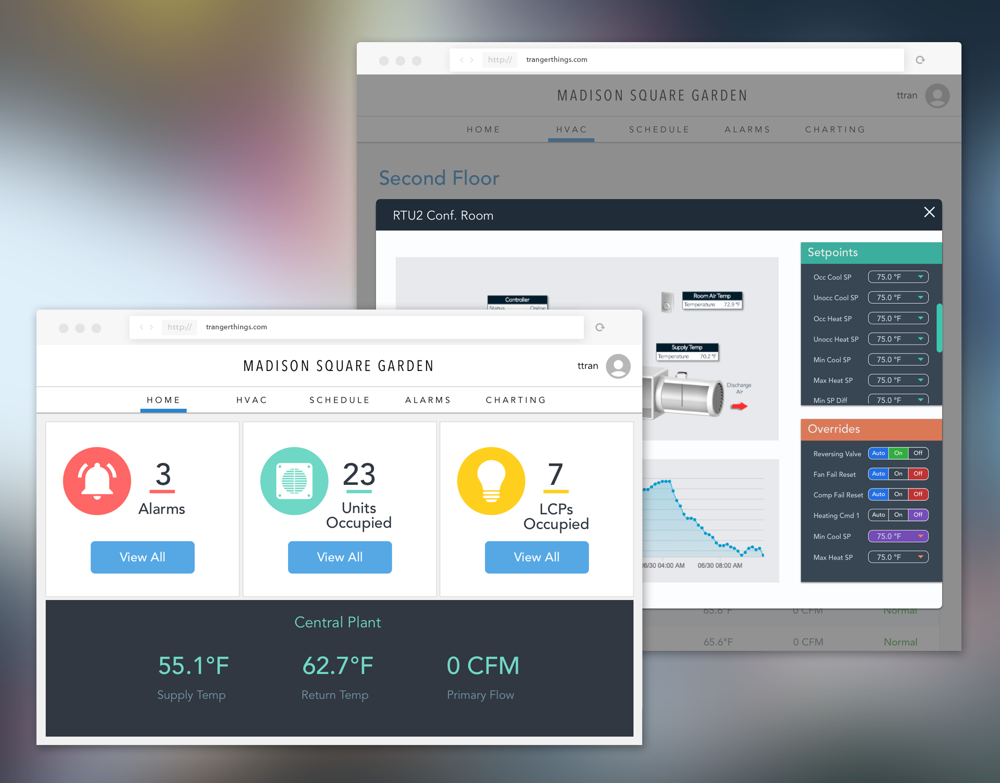
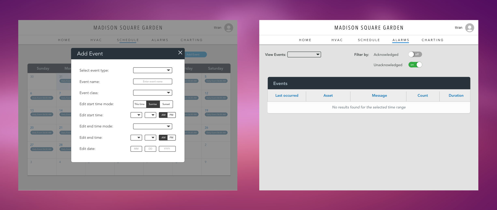

POSITION
WEB DESIGNER
TOOLS & SKILLS USED
SKETCH - ZEPLIN - DGLUX5
OBJECTIVE
Controlco was given the contract of creating a controls interface for another commercial real estate company. To start, the client gave us 3 buildings to integrate. If the integration goes well and the clients like what they see, they'll extend our contract to give us several more buildings to work with. We were presented us with a simple mock-up of what they wanted to see on the website. There would be no writable points for this system; the dashboards would only show data, making it much simpler compared to the bulky systems we normally build.

APPROACH
I took this design in a whole new direction by introducing a side navigation bar, making it look more like a dashboard as opposed to my previous projects. I wanted the interface to look modern but simple to navigate through at the same time. (INSERT COLOR TYPE)
The website would be viewed from two levels: regular user and admin. The regular user would see detailed information about a specific property, while admins can view a special dashboard that will allow them to see a portfolio of buildings.

Something that wasn't well thought out on the current site include the form elements. For example, when users are presented with a form where they can select from two options, they choose via a dropdown. This type of method is not efficient for two option selections because there is an unnecessary mouse click involved and users are not able to see the options until they click on the dropdown. I implemented a toggle feature instead so that way users can see their options at first glance and easily switch between the two.
A NEW GENERATION OF CONTROLCO WEBSITES
asdf.